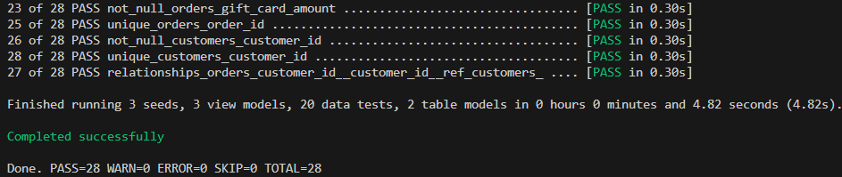
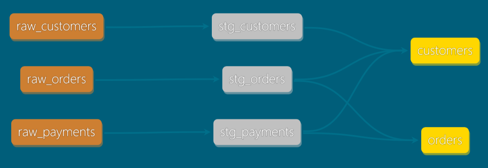
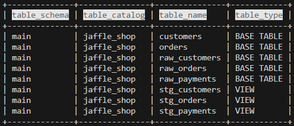

Index
Что такое dbt
Это инструмент для описания трансформаций средствами СУБД (системой управления баз данных) и упорядочивания объектов, которые создаются в базе.
Буква "Т" в ELT (extract, load, transform). Внешним инструментом (например, Spark, dlt, python скриптами) нужно загрузить данные в сыром виде в staging/landing zone (обычно схема/каталог, первый слой данных), и эстафета передаётся dbt -- вплоть до построения витрин данных и даже метрик для BI.
Дисклеймер: ниже инфа только по dbt-core версии на момент ~v1.8 (open-source, free, command line interface)
Кому нужно, какие проблемы решает
Можно воспринимать dbt как развитие идеи хранимых процедур, но применяется обычно для OLAP распределённых баз.
В современных СУБД вроде Greenplum, Clickhouse, (и облачных AWS Redshift, GCP BigQuery, Azure Synapse) вычислительных мощностей хватает для обработки данных без необходимости в Spark и подобных ETL инструментах.
Есть встроенные удобства: * Разработка * интеграция с гитом (и др. системами контроля версий и параллельной разработки) * декомпозиция на отдельные шаги расчёта, которые можно переиспользовать (принцип DRY - don't repeat yourself) * дата-тесты (запускаются на проде каждый раз) и юнит-тесты (помогают при разработке, запускаются один раз) * простые системы можно создавать обычными селектами -- dbt заворачивает модели в DDL самостоятельно * Документация: * автоматизированная документация, которая хранится рядом с кодом * data lineage -- построение графа зависимостей между моделями и удобная визуализация * Данные * автоматизированная настройка инкрементальной загрузки и историчности SCD2 * дата-контракты (проверка структуры таблиц)
Нужно знать перед началом
Пререквизиты: * установленный python > 3.5 * установленный гит клиент * основы написания SQL запросов
Запусти локально и посмотри, как это работает!
Склонируй и запусти демо-репозиторий, есть инструкции для linux, mac, windows. Если впервые работаешь с терминалом, набери в поиске по системе "powershell" или "terminal". Начни в корне репо jaffle_shop_duck, чтобы ссылки на файлы в этом readme работали.
Копируй и вставляй строчки кода по одной, наблюдай за тем, что получится. В течение ~10 минут скачаются все пакеты и отработает загрузка данных из .csv файлов в портативную базу duckdb. Если в dbt docs serve пишет, что порт уже занят, добавь --port 8085
Результат должен получиться такой:

После запуска последней команды откроется веб-страница с информацией по проекту. Понажимай всё, что нажимается (изучи как минимум lineage внизу справа и хотя бы одну из моделей слева).
Неудачные здесь цвета, конечно, но их можно будет сменить) 
Для выхода вернись в терминал и нажми Ctrl+C.
Данные можно посмотреть через консольную версию duckcli (или DBeaver, если уже знаешь что это):
duckcli jaffle_shop.duckdb -e "select table_schema, table_catalog, table_name, table_type from information_schema.tables" -t
duckcli jaffle_shop.duckdb -e "select * from customers where customer_id = 42" -t

Основные команды
Общие полезные флаги, которые можно добавить почти к любой команде ниже:
`-s` выбрать модели
`-f` пересоздать инкрементальную модель (и всё другое, что попадает в селект)
`-d` выводит в консоль дебаг логи
`-t` указать таргет профиля (dev, test, prod)
`--profile` указать профиль, напр. для ci/cd тестов на duckdb
`--vars` указать специфичные для этого запуска значения переменных в виде json
dbt <command> [-flag1 value1 --flag2-full-name value2], помни что dbt --help всегда рядом ;)
`ls` вывести список объектов, попадающих под `-s`
`compile` проверить, что в проекте нет ошибок*
`run` скомпилировать и запустить модели, сохранить их в базе
`test` запуск тестов
`seed` загрузить в базу .csv
`build` seed + run + test
`deps` устанавливает пакеты из `packages.yml`
`debug` проверка соединения с базой, не путать с -d
`init` создать проект
* также подставляет значения в jinja шаблоны модели target/compiled/project_name/model.sql -- копируй и запускай; если отобрана одна модель, выводит SQL код в терминал
А теперь разберёмся, что это было
Опущу описание клонирования репозитория и настройки venv. Детали наверняка есть в соседних разделах роадмапа про git и python.
После установки dbt и duckdb выполнили следующие команды в инициализированном проекте:
dbt build
dbt docs generate
dbt docs serve
Сконфигурированный в dbt_project.yml проект обратился к профилю jaffle_shop в profilies.yml и создал duckdb базу (впоследствии будет подключаться к ней же, с другими СУБД поведение может быть другим). После успешного подключения выполняется dbt build, которая состоит из трёх команд:
- загружает в базу "справочники" -- константные значения из csv
dbt seed
- по порядку запускает модели (
.sqlфайлы) и создаёт на их основе объекты в СУБД duckdb: таблицы или представления (вью)
dbt run
- запускает дата-тесты для проверки загруженных данных, описанные в
models/schema.yml, и показывает в терминале результат выполнения
dbt test
Затем генерируется документация (target/index.html) на основе скомпилированного в target/manifest.json проекта с описанием моделей и связей между ними.
dbt docs generate
На основе этой генерации строится локальный веб-сайт, который удобно использовать для поиска нужных сущностей в системе и прослеживания зависимостей (в серьёзных проектах их могут быть тысячи).
dbt docs serve
Терминология (базовая)
Проект
Общая конфигурация в dbt_project.yml, хранится в корне директории. Относительно этого файла указываются все пути (можно переименовать папки с моделями, тестами и пр.). В нём же указывается профайл для коннекта к источникам. Ещё в него удобно выносить общие конфигурации по моделям (для всех файлов внутри папки). В общем, центральная штука.
Profile
Конфигурация подключений к приёмнику данных, куда всё будем загружать. Может быть по-разному настроен для dev, test, prod. Если есть в директории проекта ../jaffle_shop_duckdb/profiles.yml, берётся эта версия. Иначе -- стандартная в ~/.dbt/profiles.yml (в домашней папке).
По умолчанию dbt работает с одной БД в разных схемах. Если нужно подключение к разным СУБД/источникам в рамках одного проекта/запроса, ищи интеграцию с Trino.
Модель
Описание объекта, который будет создан в СУБД. Все трансформации задаются в виде sql кода и jinja шаблонов. Пример файла
DDL-конфигурация с параметрами, общими для dbt или специфичными для адаптера, задаётся в {{ config }}
{{ config(materialized = "table") }}
{{ config(materialized = "view") }}
{{
config(
materialized='incremental',
unique_key='id',
on_schema_change='append_new_columns'
)
}}
Про инкрементальную модель хорошо написано в доке. Кратко: нужно определить логику инкремента через {% if is_incremental() %} и задать ключ в поле unique_key. Также можно задать стратегию заполнения инкремента.
В .yml файлах указываются тесты и описывается структура (на её основе генерируется дока). Пример файла. Называть schema.yml не обязательно, но расширение должно быть .yml, не .yaml.
Название объекта создаётся из имени файла, схема и БД указываются в
profiles.ymlЕсли модель не подхватывается проектом, проверь что у неё расширение
.sqlи она находится в директорииmodel-paths: ["models"].
Материализация
Указывает dbt правила создания модели на основе селекта. Выше показаны базовые настройки для: * view -- простое представление * table -- таблица, пересоздаётся каждый раз с нуля * incremental_table -- загружает только инкремент
Также есть материализуемые вью, эфемерные модели (подставляются как SQL CTE, хранятся в отдельном файле .sql), снэпшоты (см. ниже).
Seed
Файлы, загружаемые в систему "как есть". Только формат csv. Обычно -- справочники. Перезаписываются в БД каждый раз при запуске dbt seed.
Источники
Внешние объекты, созданные не в текущем проекте. Могут быть загруженными EL-инструментом таблицы staging layer, таблицы других dbt-проектов. Описываются в .yml файле в models директории, например:
sources:
* name: jaffle_shop
database: raw
schema: jaffle_shop
tables:
* name: orders
* name: customers
Могут указывать на таблицы (обрати внимание на database, schema), S3 bucket'ы и другие поддерживаемые адаптером системы.
Зависимости
Связывают модели между собой и дают возможность обращаться к моделям в разных контурах (дев, тест, прод) в зависимости от команд при запуске.
Пример кода (не запустится, т.к. нет локально не существует проекта jaffle_shop):
select *
from {{ ref('raw_customers') }} c
join {{ source('jaffle_shop', 'orders') }} o
on c.customer_id = o.customer_id
Для запуска всех источников модели укажи + перед названием:
dbt run -s +orders
Для всех зависимых от модели:
dbt run -s raw_orders+
Подробнее про фильтрацию запускаемых моделей, про +, @ и другие операторы, и объединение нескольких условий AND OR.
Терминология (продвинутая)
Lineage
Граф зависимостей, который строится при запуске на основе ref и source.
Можно посмотреть визуально в UI через dbt docs serve.
Макросы
Функции, написанные на jinja-коде, которые добавляют возможности скриптовой логики для генерации участков SQL кода (циклы, условия, переменные).
В этом проекте не заданы, но обычно живут в папке macros. Также, как и модели, описываются в sql логике. Если ещё не знаком, посмотри мини-гайд в первом упоминании jinja кода на этой странице.
Переменные внутри фигурных скобок указываются без доп. скобок, напр:
{% do(log("my_var: " ~ my_var)) %}
вместо
{% do(log("my_var: " ~ {{ my_var }} )) %}
{{ }}после компиляции подставляет результат выполнения макроса текстом,{% %}выполняет операцию без вывода результата.Для отладки используй {{ log("my_text: " ~ my_variable, info=true) }}, аналог print. Строки соединяются через ~
Тесты
Базовые проверки, определяются в папке tests/ или .yml файлах среди моделей:
* unique
* not_null
* relationships
* accepted_values
* freshness (данные добрались до таргета в течение Х минут)
Можно создавать свои кастомные тесты, можно расширить список пакетами.
Можно указывать строгость (уведомление или ошибка при нарушении теста).
Как и писал выше, запускаются каждый раз после загрузки данных.
Также есть unit-тесты, которые проверяют одну модель изолированно и нужны для отладки и поддержки сложной бизнес-логики. На момент 1.8 ещё очень сырые. Я использую альтернативу.
Vars (переменные)
Переменные, которые можно задавать при запуске, например, из Airflow (или командной строки). Используются в коде в виде {{ var('my_var') }}.
Теги
Удобный способ группировки моделей, тестов и пр. Можно задать в {{ config }} или dbt_project.yml.
Адаптер
Механизм dbt, позволяющий подключиться к разным приёмникам (postgres, mysql, duckdb, ...). Переопределяет базовое поведение макроса (весь dbt под капотом работает на макросах). Простой пример.
Также полезно упомянуть:
- Снепшоты: dbt-native реализация SCD2 для историчных таблиц
- MetricFlow: dbt-native реализация BI метрик (и ограниченно в dbt-core семантический слой)
- Analysis: папка с полезными SQL-запросами, которые хочется хранить в гите, но которые не материализуют модели
- Пакеты: библиотеки с кодом для расширения функционала, можно сделать свои
А как это может запускаться в продакшене
Обобщённое выступление с деталями: Доклад Евгения Ермакова на SmartData
- Очень подробно про версионирование dbt-core
- Конфигурирование разных environment'ов
- Куча разных коннекторов
- Про использование нескольких схем в проекте (по умолчанию одна)
- Оркестрация с Airflow через cosmos
- Best practices
Как настроить окружение для дальнейшей удобной работы
- Для VS Code есть расширение dbt power user
- TODO: добавить инструкцию по настройке вместе с SqlFluff
- TODO: добавить настройку других популярных IDE
Что ещё полезного почитать по dbt
- Поэтапное развитие проекта dbt на практическом примере (прям с кодом)
- Советы на русском с дополнениями из моего опыта
- Про миграцию с хранимых процедур на dbt
- Построение Кимбалл модели
- Отладка макросов
- Семантический слой для BI
- Официальные tips&tricks
Advanced topics (in progress)
- Управление пробелами и пустым пространством после компиляции через
{%- -%} - pre-hooks, напр. для создания временных таблиц в рамках сессии
- Порядок поиска макросов и других объектов (проект, пакеты, стандартные)
- Переопределение встроенных макросов
- Кастомные материализации
- Кастомные адаптеры (adapter-dispatch), как один и тот же код можно по-разному выполнять на разных СУБД
- Создание своих пакетов и использование https://hub.getdbt.com/
- CI/CD
Куратор раздела
Разводов Алексей, дата-инженер с 6+ годами опыта и автор: * Тг-канал * Youtube канал с мок-собесами * Бусти-сообщество начинающих и продолжающих путь в DE * CV (resume)
Если хочешь сменить текущую профессию на Дата Инженера или нужна помощь с ростом и развитием из джуна/мидла до сеньора -- пиши, обсудим https://t.me/razvodov_de_mentor
Хочешь улучшить текущий раздел, внести недостающее или поправить формулировку? Предлагай PR и тегай @LexxaRRioo.